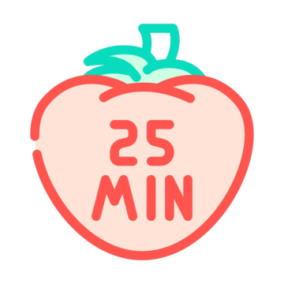

Ferramentas Educacionais
Cronograma Semanal
Organize suas atividades e mantenha seu estudo em dia com nosso cronograma semanal.

Pomodoro de Estudos
Utilize a técnica Pomodoro para otimizar seu tempo de estudo e manter o foco.
Anotações
Faça anotações rápidas e mantenha suas ideias organizadas durante os estudos.